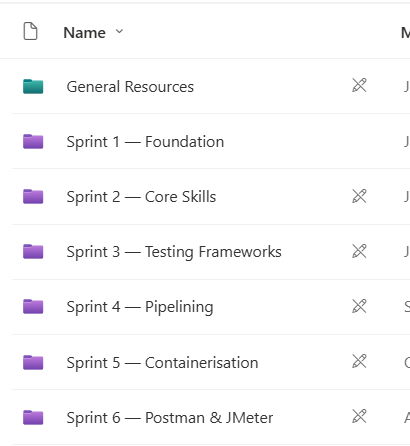
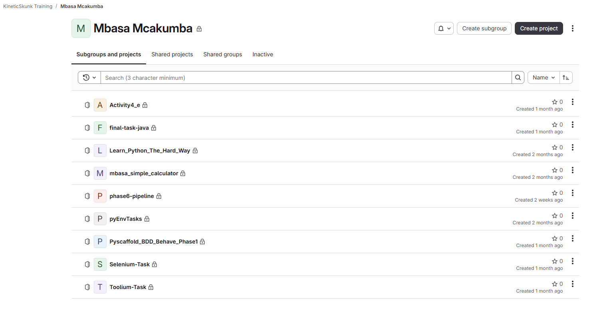
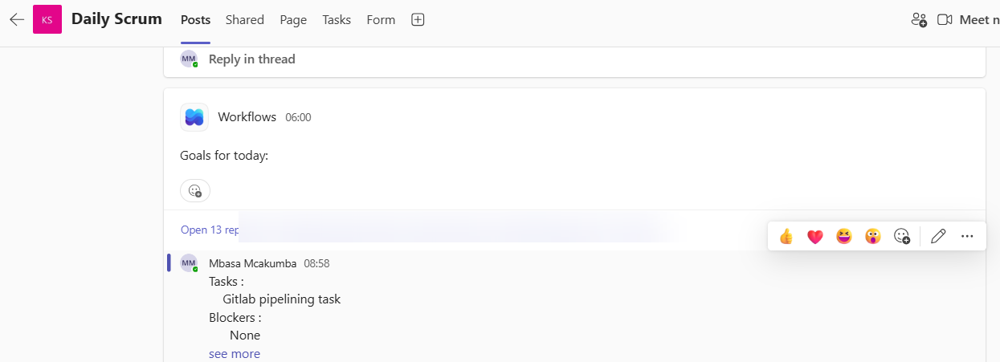
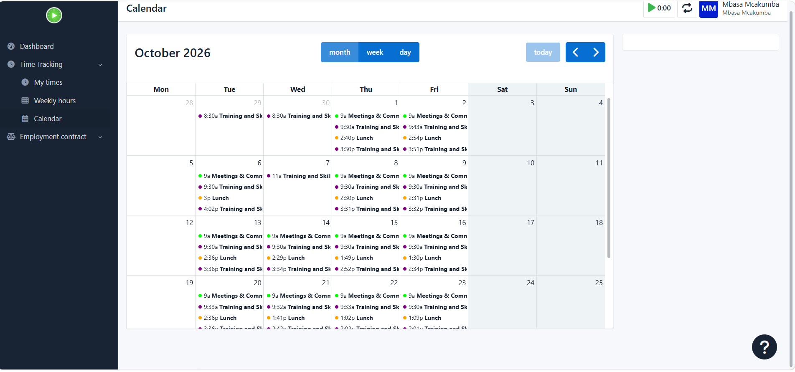
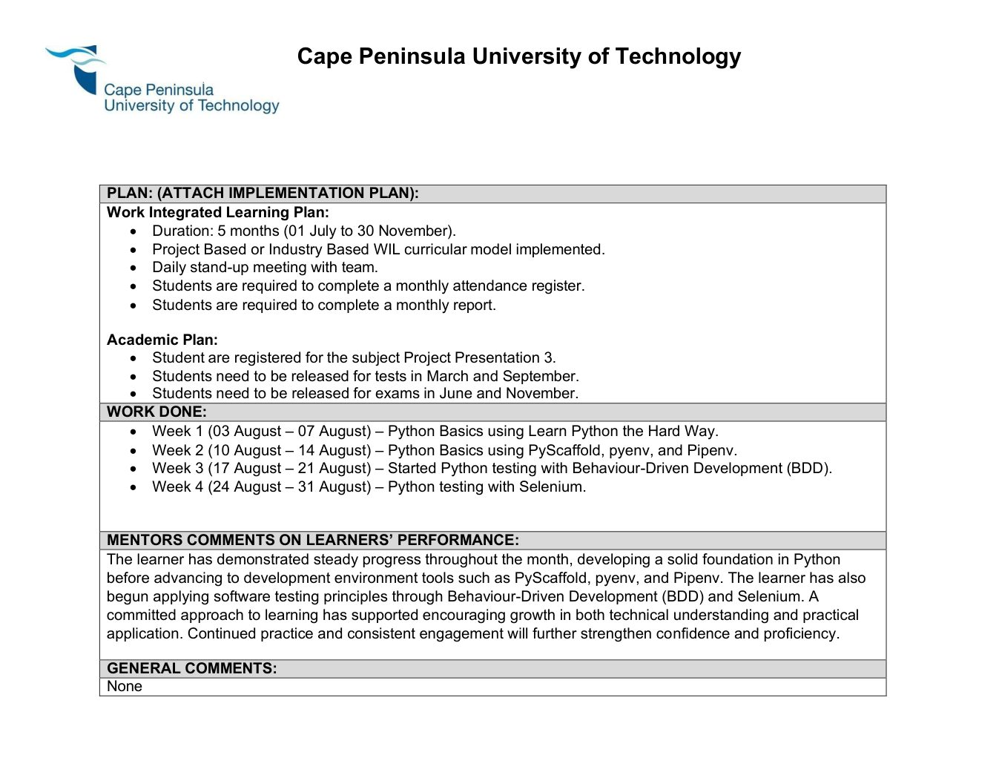
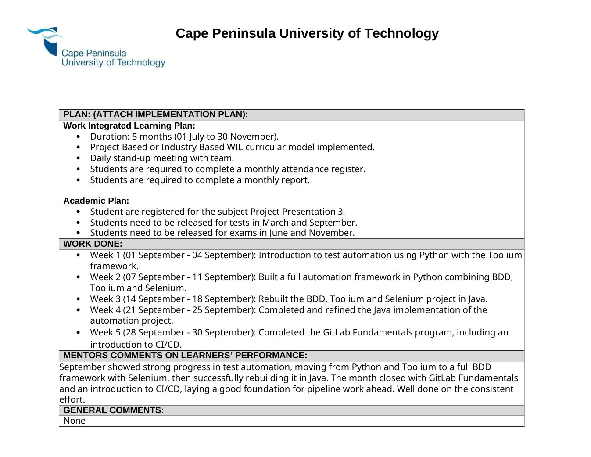

Hands-on development
Building Python skills and learning how to organize development environments using PyScaffold, pyenv and Pipenv.
Third-Year ICT Student | Cape Peninsula University of Technology
Final-year ICT Applications Development student at Cape Peninsula University of Technology (CPUT) with a strong passion for software development, programming, web technologies, and database systems. Skilled in developing practical, problem-solving solutions using modern technologies. Seeking an opportunity to apply technical knowledge in a real-world environment and contribute to innovative projects.
During my WIL placement at Kinetic Skunk IT Solutions, I have worked through structured training activities covering Python, behavior-driven development, browser automation, test frameworks and GitLab. This portfolio brings together what I worked on, evidence from my monthly reports, and reflections on my learning.
Building Python skills and learning how to organize development environments using PyScaffold, pyenv and Pipenv.
Practicing BDD and browser automation with Selenium and Toolium, then rebuilding an automation project in Java.
Taking part in daily Scrum meetings, communicating progress and blockers, and logging work activities in Kimai.
During my placement at Kinetic Skunk IT Solutions, I learned that clear communication, accountability and shared routines help a team work effectively. This is my portfolio summary of the Agile working practices I have experienced.
Our training activities build practical skills in development, software testing and automation. We share progress, ask for guidance, and work through manageable tasks so we can improve our technical abilities and professional work habits.
Every working morning, we give a brief update on what we completed, what we plan to do next and whether anything is blocking our progress. These check-ins help us stay informed and receive support when needed.
Every working morningThis charter is a reflective summary written for my portfolio, based on the working practices I have experienced. It is not presented as an official signed policy or charter issued by Kinetic Skunk IT Solutions.
These are my portfolio versions of user stories based on the six training areas. They explain the purpose behind the tasks rather than reproducing official company tickets.
As an intern, I want to understand software development and testing principles so that I can follow the stages of a real testing project.
As an intern, I want to learn Python and its development tools so that I can write, run and organize code confidently.
As a testing intern, I want to develop automated UI tests so that I can check website behavior consistently using BDD and browser automation.
As an intern, I want to learn GitLab pipelines so that I can understand how automated build and test jobs run in CI/CD.
As an automation trainee, I want to package automated tests in containers so that I can run them in a more consistent environment.
As a testing intern, I want to learn API and performance testing so that I can assess system responses and behavior with Postman and JMeter.
These are my own Agile-style summaries of training activities, not copies of the company's original tickets. August and September activities are supported by my signed WIL reports.
This overview groups the training work recorded in my reports and the topics listed in our shared sprint library. It is a reconstructed training backlog, not a copy of the team’s formally prioritized product backlog.
August and September report summaries document my completed training tasks. The shared sprint library and GitLab training repositories show how the activities are grouped. The screenshots are supporting evidence of training work, but do not establish official task priorities.
These six sprint folders reflect the training structure used at Kinetic Skunk IT Solutions. My August and September reports document specific completed activities; additional sprint topics are shown as part of the shared training sequence.
Foundational testing, development tools and workplace practices. My July report will provide the details of the work I completed during this stage.
Python fundamentals and development tools, including Learn Python the Hard Way, PyScaffold, pyenv and Pipenv, as documented in my August report.
Behavior-Driven Development and Selenium testing in August, followed by Toolium with Python and a Java framework rebuild in September.
GitLab Fundamentals and an introduction to CI/CD in September, followed by GitLab pipelining tasks reflected in my Daily Scrum update.
Docker and container-based test automation practice during the October phase of my internship.
API and performance testing are grouped together in this sprint folder. My individual work on these tools is not established by the August or September reports.
The team’s shared sprint library shows six stages: Foundation, Core Skills, Testing Frameworks, Pipelining, Containerisation, and Postman & JMeter.

A selection of training repositories in my GitLab workspace, including Python, Selenium, Toolium, Java and pipeline exercises.

My weekly record is based on the activities documented in my August and September WIL reports. We also attend a daily Scrum every working morning from 09:00 to 09:30, where we share progress, next tasks and blockers.
Every working morning I share what I have worked on, what I plan to do and any blockers. The meetings help the team stay informed and make it easier to ask for support when necessary.

My Daily Scrum update records a GitLab pipelining task and no blockers. Other participants’ names are hidden in this excerpt.
I use Kimai to record time spent on assigned tasks and training activities. This provides an additional record of the work completed throughout the placement.

My October 2026 Kimai calendar shows time entries for meetings, communication, training and related work activities.
The work-summary pages below come from my own August and September 2026 monthly reports. Cover pages with identification numbers and signed attendance records are intentionally excluded from the public website.


August and September reports document my training progression; the sprint library, GitLab projects, Daily Scrum and Kimai screenshots provide additional evidence of working practices. July and later October reports may be added separately.
These reflections connect my evidence to what I have learned about teamwork, planning, development and professional growth during WIL.
One of the biggest things I have learned during WIL is that good teamwork depends on communication and clear expectations. Our morning Scrum, from 09:00 to 09:30, gives me a chance to share my progress, explain what I will focus on and raise blockers. I have learned that it is better to communicate a problem early than to keep struggling alone. Using Kimai also helps me take responsibility for recording how I spend my working time. These habits have helped me understand why teams need shared ways of working, and why being a good team member involves both completing tasks and keeping others informed.
At the beginning of my WIL training, the main focus was learning Python. As the tasks progressed, I started applying that knowledge to testing, BDD and Selenium. Seeing the work as small tasks with a clear purpose helped me understand how one skill prepares me for the next. In September, working on a Python automation framework and then rebuilding it in Java showed me that the same testing ideas can be used with different languages. I learned to look beyond simply finishing an exercise and ask what the exercise is teaching me and how it contributes to the bigger goal.
My internship training has followed a progression from fundamentals to more advanced tools. In August, I learned Python and development environments before moving to BDD and Selenium. In September, I built on that foundation by using Toolium and then recreating the automation project in Java. This order helped me see why tasks are not all started at the same time. Some work depends on understanding what comes before it. Looking at my training activities as a backlog has helped me appreciate the importance of organizing work, choosing what to focus on next and keeping track of what still needs evidence or further practice.
Working through different stages of training has shown me the value of breaking a large learning goal into manageable tasks. My August work focused on Python and basic automation, while September involved Toolium, Selenium, Java and GitLab Fundamentals. Each stage gave me a clearer direction for what to work on. Rebuilding the automation project in Java also made me pay attention to understanding the existing framework rather than only following instructions. I have learned that progress is easier to manage when work is divided into smaller goals and when I regularly check what is finished, what needs improvement and what needs to be done next.
Keeping a record of my weekly work has helped me notice how much I have learned during the placement. Looking back at my August report, I can see that I started with Python basics and then moved into BDD and Selenium. By September, I was working on a complete testing framework in Python and rebuilding it in Java. Our daily Scrum and my Kimai time entries add more structure to that record. I have learned that a logbook is not only about listing completed tasks. It also helps me reflect on difficulties, explain my progress clearly and identify areas where I still need more practice. I want to continue using these habits as I develop my skills.